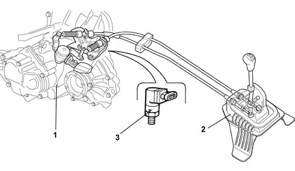

Introduction - GEARBOX
- Path
- Descriptions > 21 GEARBOX > Introduction - GEARBOX
- Kind
- system description
- Applies to
- all engines; all production periods
- Interactive page
- https://sloeber94.github.io/elrnDB-lYpsln/en/#/2429843
Applies to: engines: 1.2 8v, 1.2 16v, 1.4 16v; all production periods
Manual gearbox positioned transversely in the engine compartment, including 3 shafts supported by bearings with the gears always meshed and a final drive reduction. The twin cable external control is made from plastic materials with excellent properties (resistance to fatigue, self-lubrication capacity, reduced weight)
The C.514 5-speed gearbox is used for petrol versions (1.2 16v and 1.6 16v):

1, Manual gearbox with differential 2, Manual gearbox external controls 2, Speedometer sensor